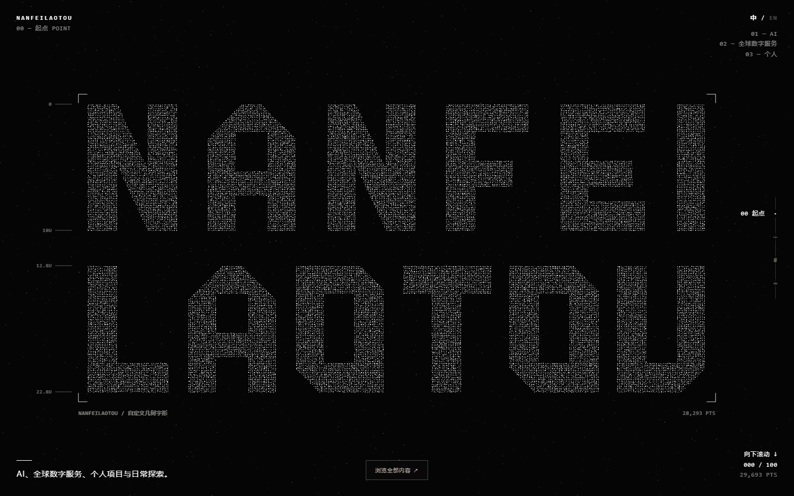
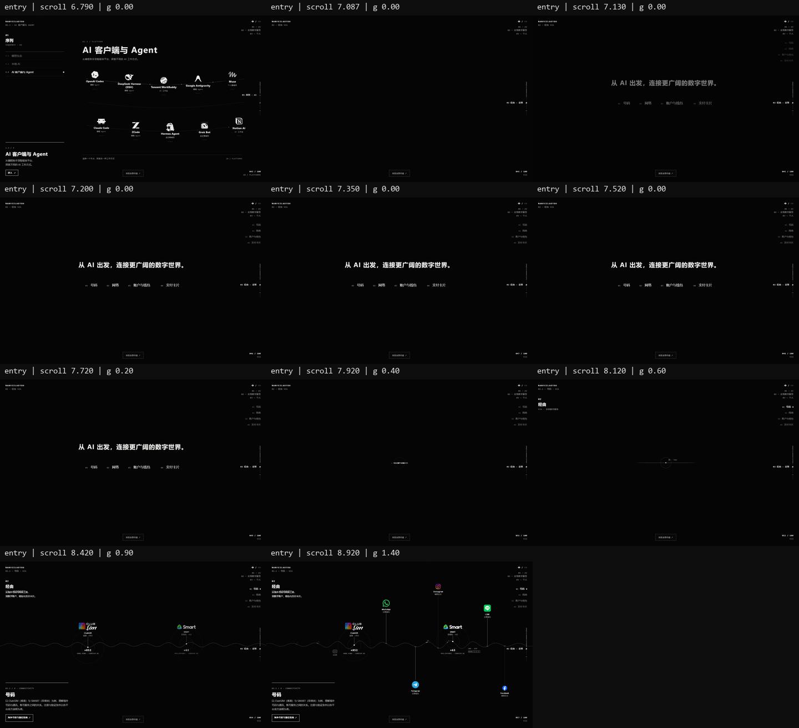
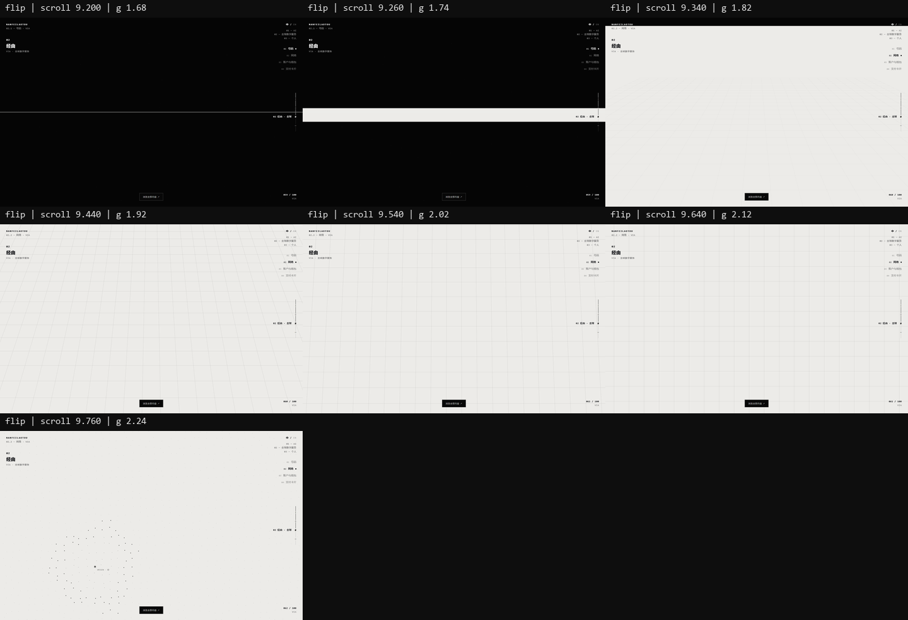
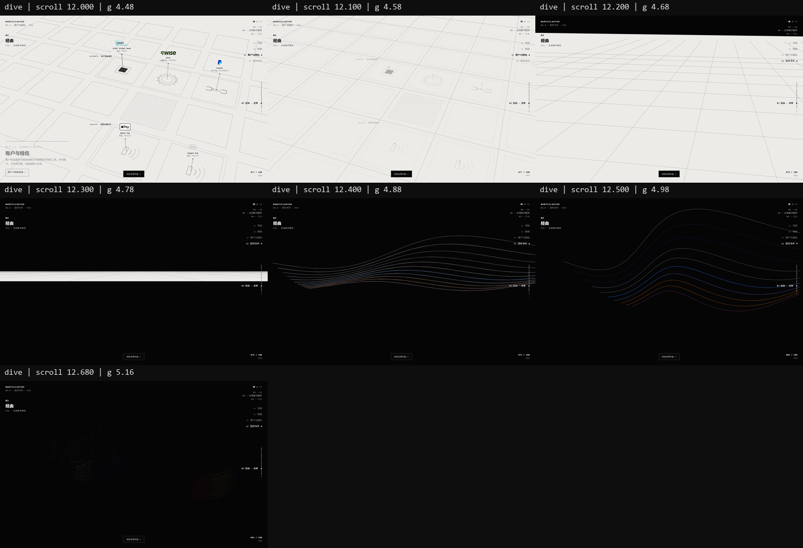
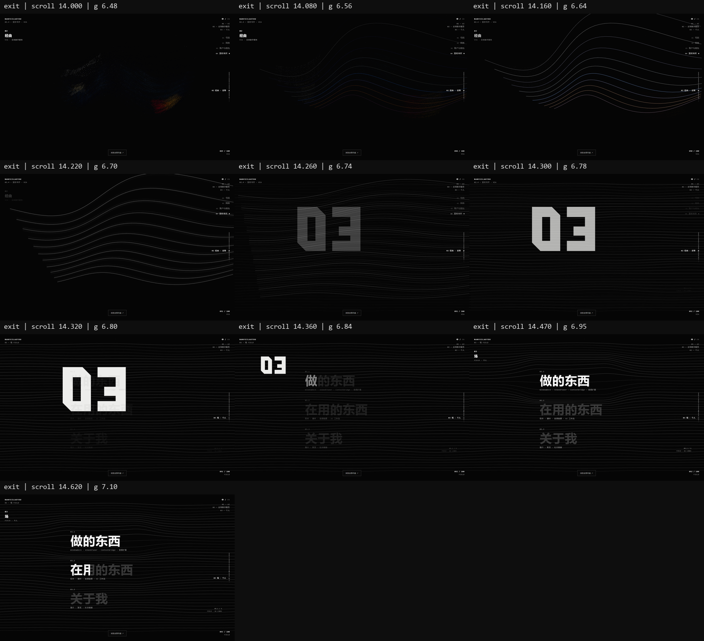
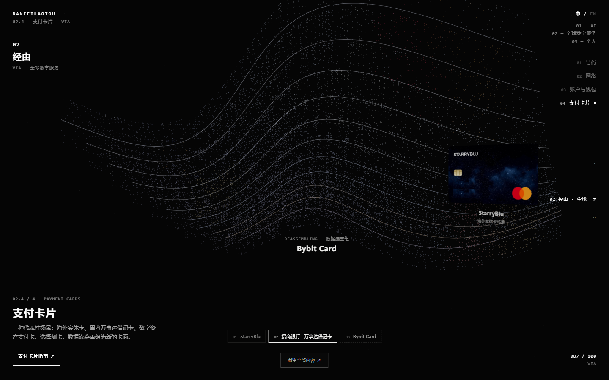
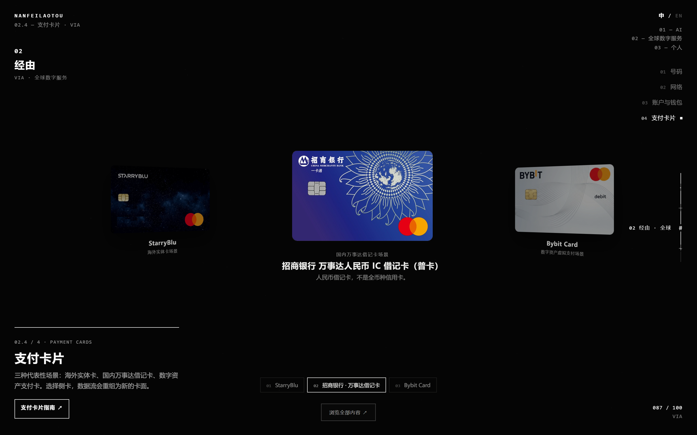
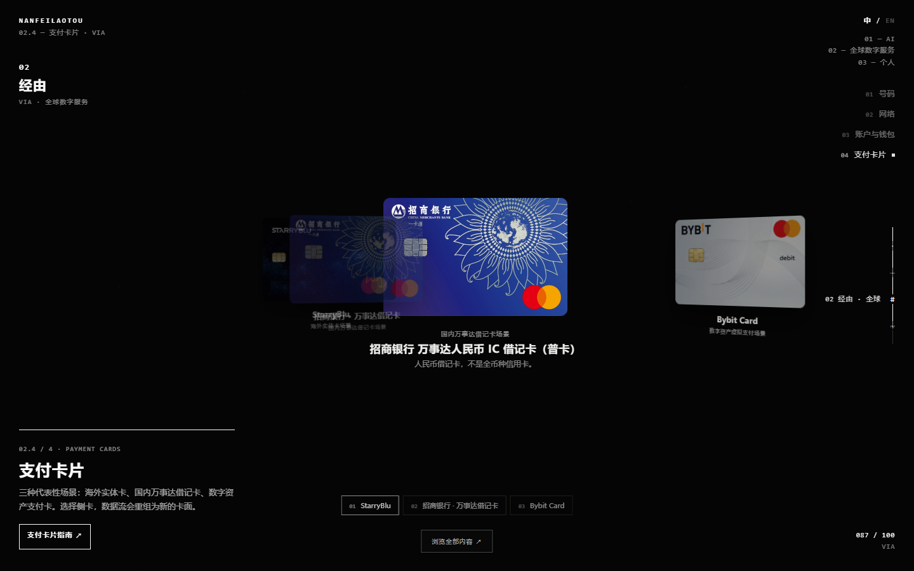
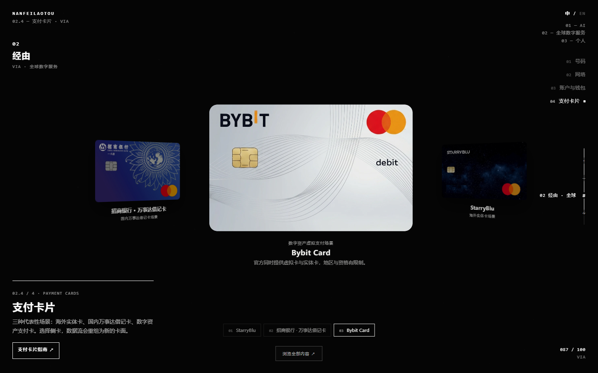

Opening → AI → 经由 / VIA → Personal
2026-10-18 · 总滚动 15.68 屏。以下均为真实浏览器结果，未用示意图代替。手机版仅做访问兼容，竖屏精修按用户要求留待下一轮。
完整操作录像
1440×900，约 44 秒：开场、AI、黑白翻面、三卡粒子切换、出口与反向返回。录像单独录制，不用于性能数字。
AI 前后对照
三桌面分辨率共 15 次对照。因总长度增加而改变的进度数字 / 轨道单独排除；其余内容的差异通道为 0（阈值 2）。

整合前 / Commit A 整合后 / 当前首页
整合后 / 当前首页Global 四个稳定阶段
Canvas 结构和卡片 WebGL 与 Opus 原始基线作 16 次逐通道比较，最大差异为 0。首页保留自己的全站 HUD，并增加无冲突的 Global 子导航。
入口与两次黑白转换

AI → Bridge / VIA：停用旧白色展开，句子与 token 由同一渲染器接管。
黑 → 暖白：载波成为平面侧边，保留 Opus 空间翻面。
暖白 → 黑：下潜、彩色流与真实粒子成像。Global → Personal

Personal 直接从 legacy 9.74 的已展开线场开始；最后 0.08 屏交接同相位线场，避免展开后缩回再展开。
三卡与后备

低 q 换色，中央高清层不绘制。
招行主卡保持 290.5 CSS px 上限，不伪造高清。
实际强制 WebGL 不可用的静态后备。
系统减少动态效果：即时选择，清晰静态材质。功能回归 · 后备与加载 · Opus 画面对照 · AI 画面对照 · 焦点连续性